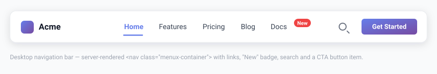

Introduction
Giuliomax Menu Builder is a free, open-source WordPress plugin that lets you build any kind of navigation menu — from a simple list to a full-width mega menu — without writing a single line of code.

What is Giuliomax Menu Builder?
Most WordPress menu plugins either charge for the features that matter or lock you into a visual builder that produces bloated markup. Giuliomax Menu Builder takes a different approach: every feature ships in the free version, the output is clean and semantic, and the settings panel lives directly inside the standard WordPress menu editor you already know.
You can use the plugin in two ways:
- Shortcode — paste
[menux]anywhere in a page, widget, or classic theme template. - Gutenberg block — drag the MenuX block into any Full Site Editing (FSE) header template part. No shortcode needed.
Key features
| Feature | Details |
|---|---|
| 50 ready-made themes | Organized into 10 style categories. Apply in one click. |
| Mega menus | Full-width, multi-column dropdown panels. No code required. |
| Logo support | Place a logo in the bar, with a separate mobile logo and optional link. |
| Sticky bar & effects | Sticky-on-scroll nav, scroll progress bar, entrance and hover animations. |
| Announcement bar | Sticky promotional banner with an optional live countdown timer. |
| WooCommerce cart | Cart icon with a real-time item badge in the nav bar. |
| CTA buttons | Turn any item into a styled call-to-action button with custom colors and border-radius. |
| Built-in search | Menu search and in-page search, keyboard accessible. |
| Visibility rules | Show or hide items by user role, device, schedule, or login state. |
| Mobile menus | 4 styles: Dropdown, Fullscreen, Left Drawer, and Right Drawer. |
| Gutenberg block | Native block for FSE themes. Works in any header template part. |
| Accessibility | WCAG 2.2 AA. Full keyboard navigation, ARIA labels, focus rings. |
| Scroll Spy | Auto-highlights the nav link for the section currently visible in the viewport. |
| Dark mode | Light, Dark, or Auto (follows visitor's OS preference). |
| Multilingual | Compatible with WPML, Polylang, and TranslatePress. |
| 70+ Google Fonts | Apply any font to the menu without leaving the settings panel. |
| Import / Export | Transfer your menu configuration between sites with one file. |
Completely free. There is no Pro version, no upsells, and no features hidden behind a paywall. Every item in the table above is available immediately after installation.
Requirements
- WordPress 5.8 or higher
- PHP 7.4 or higher
- Menu items are managed directly in the plugin's own Menu Builder admin page — no need to configure menus in Appearance → Menus
- WooCommerce is optional — the cart icon feature activates automatically if WooCommerce is active
Quick start
- Install the plugin from the WordPress plugin directory — search for Giuliomax Menu Builder.
- Activate it. A new Menu Builder item appears in your WordPress admin sidebar.
- Open Menu Builder to add your pages, choose a theme, and configure mobile behaviour.
- Add the menu to your site using either the shortcode or the Gutenberg block.